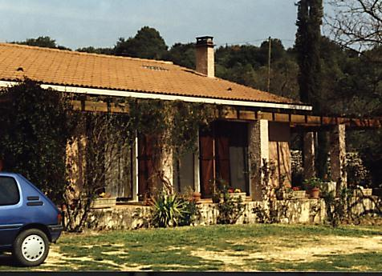

Ma vie, selon Sebastien...
C'est sous le signe du Capricorne, le 5 janvier 1974, que Dieu m'envoya sur Terre. "Pourquoi?" me direz-vous. J'en sais rien et pour tout vous dire, je m'en fous un peu...
J'ai donc commencé ma vie près de Rouen, mes parents commencèrent déjà à se plaindre de moi car il parait que je pleurais souvent (c'est faux bien entendu). Peu de temps après, je me retrouvais dans le Gard, à La Capelle! Village bien connu pour son magnifique étang.

Home sweet home...
C'est justement à La Capelle, au mois de septembre 1981, que commence mon ascension. Alors que Mitterrand est président, qu'ET débarque sur Terre, que le TGV fait fureur, MOI, je rentre en CE1! Lancé sur ces bases solides j'obtiens le BEPC en 1989!!! Wouahh...
En 5eme je fais la connaissance de David Mourier, passioné comme moi par l'entomologie, de Vander, un nordiste qui joue aux échecs plus vite que son ombre, et de Brice (maintenant c'est sergent Brice...).
Les années passent, c'est en 4ème que je prend conscience de ma destinée. Dès lors, rien ne peut plus m'arreter, mon choix est fait: J'irai a TELECOM PARIS ! Suivant le plan que j'avais minutieusement concocté, je décroche le BAC 4 ans plus tard. J'étais alors élève au Lycée Charles Gide à Uzès, que vous pouvez d'ailleurs toujours visiter de nuit, c'est simple il suffit de faire le mur...
J'entre alors en Maths Sup. au Lycée Joffre à Montpellier. Commence alors un nouvel épisode de ma vie intitulé Sébastien au pays des matrices, Formes différentielles, Cyclotrons, Réaction prépondérantes, Points d'inflexion, Psions, Lasers, Mécanismes élémentaires, et Ampli-Op. Integrales multiples et espaces préhilbertiens tenteront vainement de m'éloigner du chemin tracé.... Charmé par la douceur de l'Hérault je décide de rester un peu. Hummm, bon d'accord, il faut bien le reconnaitre, j'ai redoublé ma spé... Le chemin est long parfois... Mais fallait-il se décourager pour autant?
Non bien sur! Je n'ai d'ailleurs pas hésité à rester un an de plus au Lycée. En fait, je garde un bon souvenir de cette année. J'y ai fait la connaissance des Bizuths Bruno et Yagouine, de quelques exilés des DOM-TOM et je me suis lié d'amitié avec Faro, une superbe brune du Charlie's.... Enfin, à l'aide de mon sérieux internationalement réputé, je réussis le Concours Commun Mines/Ponts.
La suite...C'est pour une autre fois...mais je peux d'avance vous dire qu'aventure, action, amour, sexe et émotion, seront au rendez-vous...
Retour à la page principale.